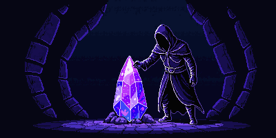

The Story
The Dark Ascension Begins
Deep beneath the Shadowed Path, a hooded figure named Thelsicker stumbles upon a forgotten wellspring of arcane energy. The ancient power stirs, and with it, the darkness that has slumbered for millennia.
Armed only with a rusted sword, Thelsicker must journey through 12 zones of escalating darkness — from the tutorial caves of The Awakening to the reality-bending expanse of Primordial Darkness.
Each boss defeated awakens a fragment of Thelsicker's true power. Seven devastating spells lie dormant, waiting to be reclaimed. But the deeper you descend, the more the world pushes back — and the line between ascending to power and falling to darkness grows thinner.